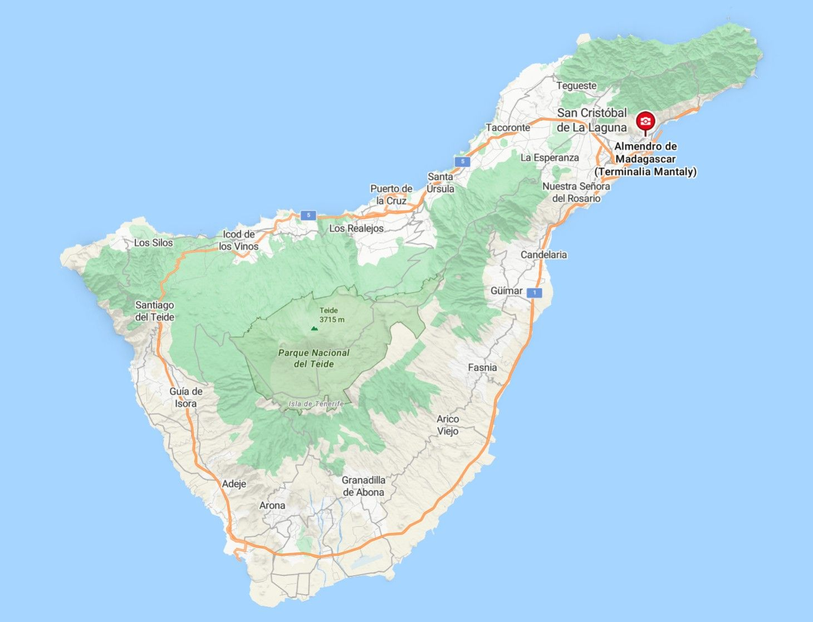

Bienvenido a Santa Cruz de Tenerife
Descubre los recursos turísticos de la provincia de Santa Cruz de Tenerife, un paraíso en el océano Atlántico con paisajes volcánicos, playas de arena negra, bosques de laurisilva y una gastronomía única.
Galería de recursos turísticos
